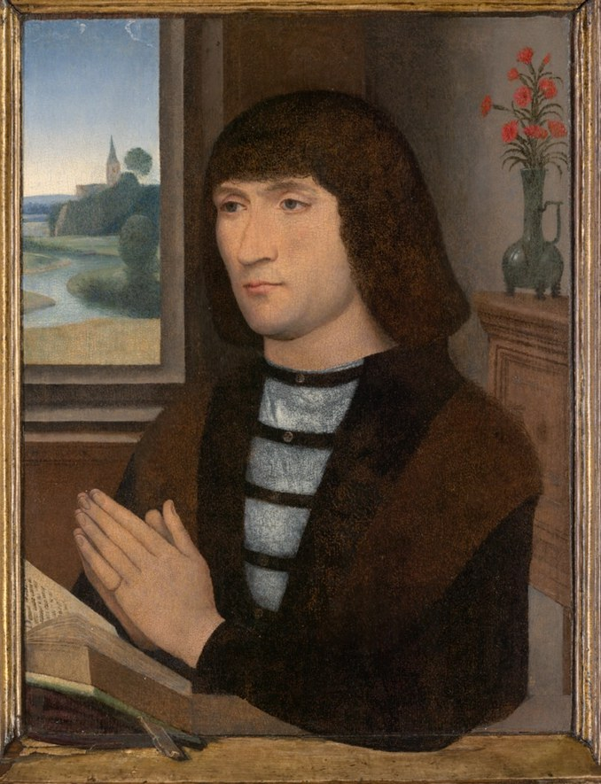

Portrait of a Donor (recto); Saint Anthony of Padua (verso)
Hans Memling · c. 1485 · Oil on panel · 41.3 × 33.3 cm · Art Institute of Chicago
Free to use
Open in The ArtchiveFull-size file ↗
More like this


More by Hans Memling
.jpg/330px-Das_J%C3%BCngste_Gericht_(Memling).jpg)

![Saint Veronica [obverse] by Hans Memling](https://api.nga.gov/iiif/8788f9a6-142d-40b7-953b-a9a208ff2eef/full/400,/0/default.jpg)
![Chalice of Saint John the Evangelist [reverse] by Hans Memling](https://api.nga.gov/iiif/1a761edd-c52e-47c0-b422-df074e14c803/full/400,/0/default.jpg)


Hans Memling · c. 1485 · Oil on panel · 41.3 × 33.3 cm · Art Institute of Chicago
Free to use
Open in The ArtchiveFull-size file ↗